Définir une image numérique¶
Que cache une image ?¶
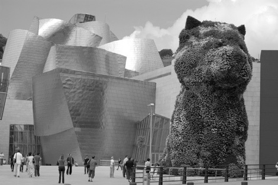
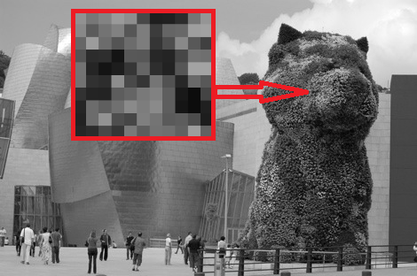
Voici une belle photo prise devant le musée Guggenheim de Bilbao. On peut facilement vérifier que:
Un pixel?
Une image numérisée est constituée de pixel (picture element), auquel est associé une couleur.
- son format est de
470x312: il y a donc 470 colonnes et 312 lignes , soit 146640 pixels! - cette photo est un fichier numérique dont l'extension est
png.
Chaque pixel a un niveau d'intensité allant du noir (0) au blanc(255) en passant par une multitude de niveaux de gris...
Exercice
Pourquoi y a t-il 256 niveaux de gris pour une image?
Car ce niveau est en général codé sur un octet et avec un octet on peut coder au maximum \(2^8=256\) informations!
Nous allons dans ce travail découvrir comment sont structurées les images numériques et proposez des méthodes de transformations connues: changement de contraste, de taille, d'orientation,...
Exploration en profondeur¶
L'image présentée ci-dessus est un fichier qui porte l'extension png(portable network graphic).
Encore le W3C!
Le consortium international W3C est chargé du développement des standards du WEB dont le format png. Pour les plus curieux, voir ici.
La spécification donne les informations suivantes:
- leur signature: 8 octets
- le chunk
IHDRpour l'en-tête : 13 octets - le chunk
IDATpour les données : poids variable selon l'image - le chunk
IENDpour la fin du fichier : 12 octets
Donc une image dans ce format pèse au moins 45 octets...
Le chunk IHDR donne entre autres les informations sur la largeur, la hauteur de l'image. Nous y reviendrons plus tard ...
Un format hyper connu : le format jpeg
Attention! les fichiers .jpeg ne sont pas à proprement dit des fichiers images mais des fichiers compressés d'une image. Souvent, on commet une confusion, pas bien grave au final!
Une image Portable Network Graphics (PNG) est un format ouvert, on peut donc explorer son contenu!
Exercice
- Récupérer la photo
puppy.png( Télécharger la photo) et l'imagefirefox.png( Télécharger l'image). - Ouvrez la photo avec les routines Python habituelles, en mode lecture binaire et visualisez l'entête du fichier(le programme est donné juste après).
- Déterminer le nombre d'octets constituants ce fichier. Le comparer à la valeur obtenue par un clic droit sur l'image puis propriétés.
- Ouvrez l'image firefox.png et vérifier qu'elle a la même signature(ils commencent tous par la même série d'octets qui est leur signature...).Affichez la liste des octets dans votre console.Donnez cette signature.
{kind=link}
{kind=link}
#Rappel sur les ouvertures en lecture ou ecritures de fichiers
fichier_src = open("........","rb")#Completer avec le chemin relatif vers l'image
#l'ouverture en mode rb ouvre le fichier en binaire (octet...)
listeOctet = [elt for elt in fichier_src.read()]
print(len(listeOctet))#affiche la longueur de la liste, le nombre d'octets en fait!
print(listeOctet[:100])# affiche seulement les 100 premiers octets sinon...
fichier_src.close()
Vous devriez obtenir ceci:
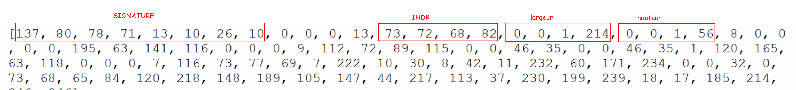
Problème de dimension?
La largeur de l'image est 470 et sa hauteur 312! Expliquez alors les valeurs proposées ci-dessus.
Image matricielle¶
En général, les images numériques sont des images matricielles, par opposition aux images vectorielles définies par des courbes mathématiques. Les fichiers .svg développés par le W3C, sont des images vectorielles très adaptées à la construction de logo, comme celui de Firefox, décomposable en éléments géométriques.
Exo
- Observez le logo Firefox défini sous
.svgà cette adresse et trouvez sa description.svg(clic droit-> code source de la page). - Zoomez(touche
Crtl + molette). - Ouvrez le fichier firefox.png dans le navigateur Firefox(cliquez sur le lien précédent...). Zoomez et comparez avec la manipulation précédente.
- Quelle différence entre une image matricielle et vectorielle?
{kind=link}
Les images vectorielles ne permettent pas de représenter la réalité de nos photos. Aussi, ne sont-elles utilisées que pour des représentations spécifiques comme les logos par exemple...
À retenir!
Une photo, une image est donc définie généralement par un tableau de valeurs, appelée matrice, définissant ainsi le niveau d'intensité de chaque pixel de cette image. On retrouvera en général:
- des images en niveaux de gris en mode
L: lorsque les couleurs sont codées sur 8 bits, c'est-à-dire 1 octet, il y a donc 256 niveaux de quantifications possibles allant du 0(noir) au blanc(255). - des images couleurs codées en mode
RGBpour Red Green Blue: chaque couleur est codée sur 8 bits soit un octet. - des images couleurs avec un canal alpha en mode
RGBApermettant de contrôler la transparence d'une image, notamment lorsque l'on souhaite superposer l'une sur l'autre.
Exo
Dans une image couleur où chaque couleur est codée sur un octet, combien de couleurs différentes peut-on obtenir?
Dans une image matricielle contenant des pixels, le premier pixel est celui en haut à gauche et le dernier, celui en bas à droite. Puis on parcourt une image ligne par ligne, de gauche à droite. Ceci est important pour comprendre comment on peut lire ou écrire sur une image!
À savoir!
On entend par:
- lire un pixel, donner la valeur de sa couleur qui se présente sous différentes formes (entier, triplet ou quadruplet d'entiers) selon le mode de représentation (L, RBG ou RGBA)
- écrire un pixel, définir sa couleur par la donnée d'un entier, d'un triplet ou un quadruplet selon le mode de représentation...
En mode programmation!¶
Cette section propose de manipuler des images numériques à l'aide d'un bibliothèque Python appelée PIL.
Exo
Installer la bibliothèque PILLOW dans Thonny(lors de l'import il faudra l'appeler sous son ancien nom PIL...).
Il s'agit de traduire en Python certaines manipulations.
Les routines !
Vous allez apprendre à:
- ouvrir un fichier image
imgsur lequel on travaille; - déterminer les propriétés de cette image(
mode,size,format); - créer une nouvelle image;
- lire et écrire sur une image (attention en général, on lit dans l'une on écrit dans l'autre!)
- montrer ou enregistrer l'image obtenue.
Pour illustrer les commandes python répondant à ces besoins, nous allons utiliser la photo puppy.png.
ATTENTION
Tous les programmes doivent avoir en en-tête, l'import de la bibliothèque:
from PIL import Image
Ouvrir une image et lire des informations¶
Exo
Copier le code suivant et sauvegardez sous le nom lecture_inform.py
from PIL import Image
#Ouverture de l'image existante, le chemin relatif doit être donné à partir de votre fichier!
im = Image.open("Images\puppy.png")#pour ma part je mets les images dans un dossier Images
#On peut connaître les informations suivantes
print(im.mode,im.size,im.format)
im.close()
L'objet im n'est pas une image mais un objet tampon sur lequel nous travaillerons avant de le fermer.
Une image possède toujours une taille, un format et un mode de représentation (niveaux de gris, couleurs avec alpha éventuel).
Exo
- Quelles sont les caractéristiques de l'image
puppy.png(mode, taille, format)? - Et celles de l'image
firefox.png?
Création d'une nouvelle image¶
Nous allons créer une image de taille 750(width) par 200(height) d'abord en niveaux de gris (mode L)
À savoir!
Remarquez que la taille est donnée sous la forme d'un tuple.
from PIL import Image
#Creation d'une nouvelle image en niveaux de gris
IM = Image.new('L', (750, 200))# en mode L pour niveaux de gris
IM.save("Images\img_gris1.png")#pour créer l'image dans le dossier Images...
IM.close()
Pour la création d'une image de taille 750 par 200 en couleur, seul le mode change (mode RGB):
À savoir!
Par défaut et quel que soit le mode, tous les pixels de l'image sont noirs!
from PIL import Image
#Creation d'une nouvelle image en couleur
IM = Image.new('RGB', (750, 200))# en mode RGB pour la couleur
IM.save("Images\img_coul.png")#pour créer l'image dans le dossier Images...
IM.close()
Lire la valeur d'intensité d'un pixel¶
Le code suivant permet de lire sur l'image puppy, la valeur d'intensité du pixel situé à la colonne 20 et la ligne 30.
from PIL import Image
#Ouverture de l'image existante
#Le chemin relatif doit être donné
im = Image.open("Images\puppy.png")
pix = im.getpixel((20, 30))
print(pix)
im.close()
Attention, la méthode getpixel prend en paramètre un tuple correspondant aux coordonnées (colonne, ligne) du pixel dans l'image: dans l'exemple, 20 ième colonne et 30ième ligne(il faut bien sûr s'assurer que ce pixel existe...) . Donc on ne tape pas im.getpixel(20,30) mais bien im.getpixel((20,30))
Exo
En utilisant le code précédent,
- donner l'intensité du pixel
(0,0)de l'imagepuppy.png - donner l'intensité des pixels
(105,42)de l'imagepuppy.png. - quelles sont les coordonnées du dernier pixel de l'image(en bas à droite). Donnez son intensité.
Écrire l'intensité d'un pixel¶
On rappelle qu'on entend par écrire un pixel, définir sa valeur d'intensité!
from PIL import Image
#Ouverture d'une nouvelle image
IM = Image.new('L', (750,200))
IM.putpixel((425,100), 150)
IM.save("Images\img_gris2.png")
IM.close()
putpixels'applique à l'objet IM et prend en paramètres l'endroit où l'on veut écrire (c,l)(425 et 100 dans notre exemple) et la valeur d'intensité p(150 dans l'exemple). Attention dans le cas d'une image couleur l'intensité est un triplet (r,g,b) voire (r,g,b,a).
Rappel
Lorsque vous créez une image, tous les pixels sont noirs par défaut. Donc à 0 sur tous les canaux!
À retenir
- La méthode
im.getpixel((c, l))permet de capturer la valeur d'intensité du pixel situé aux coordonnées(c, l)de l'objetim. - La méthode
im.putpixel((c, l), valeur)permet de définir la valeur d'intensité du pixel situé aux coordonnées(c, l)de l'objetimen lui attribuant la valeurvaleur(un entier pour le modeLou un tuple pour une couleur).
Parcourir une image pixel par pixel¶
Le code précédent permet de définir l'intensité d'un pixel. Mais comment agir sur tous les pixels d'une image?
La double boucle¶
Pour parcourir une image pixel par pixel, on va utiliser une double boucle: l'une pour parcourir les lignes, l'autre pour parcourir les colonnes.
from PIL import Image
#Ouverture de l'image
imInit = Image.open("Images\puppy.png")
#La double boucle permet de parcourir l'image de haut en bas de gauche à droite
for l in range(imInit.size[1]):#l comme ligne
for c in range(imInit.size[0]):#c comme colone
pix = imInit.getpixel((c,l))# getpixel capture la valeur de couleur du pixel (c, l)
print(pix)
imInit.close()
Dans tous les exercices, on utilisera ces deux boucles pour lire ou écrire sur une image.
Par exemple, créons une image en couleur de taille (500, 500) dont tous les pixels sont blancs sauf ceux de la ligne 250 qui sont rouges:
Exo
Copier le code suivant et exécuter-le.
from PIL import Image
#Ouverture d'une nouvelle image
img_new = Image.new('RGB', (500, 500))
#La double boucle permet de parcourir l'image de haut en bas de gauche à droite
for l in range(img_new.size[1]):#l comme ligne
for c in range(img_new.size[0]):#c comme colone
if l == 250:
img_new.putpixel((c, l), (255, 0, 0))# composante de rouge à la ligne 250
else:
img_new.putpixel((c, l), (255, 255, 255))# composante de blanc sinon
img_new.show()#pour montrer l'image
img_new.close()
Exo
En s'inspirant du code précédent:
- Créez une image de largeur 500 et de hauteur 100, où tous les pixels de la ligne 50 sont verts, les autres restant noirs...
- Créez une image de largeur 500 et de hauteur 100, où tous les pixels de la colonne 250 sont bleus, les autres blancs...
- Créez une image de largeur 500 et de hauteur 500, où tous les pixels des diagonales sont rouges, les autres blancs...
Lire dans l'une et écrire dans l'autre¶
Tous les exercices proposés sur le traitement d'image repose sur le principe suivant:
Info
On lit les informations dans une image et on écrit dans une autre
Pour illustrer mes propos, construisons l'image négative de puppy.png: c'est l'image obtenue en inversant tous les niveaux de gris: 0 devient 255, 1 devient 254, 2 devient 253,..., 254 devient 1 et 255 devient 0!
Algorithme à suivre
- Ouvre l'image Source en lecture
- Crée une nouvelle image Destination de caractéristiques identiques à la source (même mode, même taille)
- Pour chaque coordonnées d'un pixel de la souce, prélève son intensité
p. - Écris dans la destination au même endroit, le pixel d'intensité
255-p. - Enregistre l'image ainsi créée.
L'implémentation de l'algorithme précédent donne en Python, le programme suivant:
from PIL import Image
#ETAPE 1:
imSource = Image.open("Images\puppy.png")
#ETAPE 2:
imDestination = Image.new(imSource.mode, imSource.size)
for l in range(imSource.size[1]):#l comme ligne
for c in range(imSource.size[0]):#c comme colone
#ETAPE 3
pix = imSource.getpixel((c,l))# getpixel capture la valeur de couleur du pixel (x,y)
#ETAPE 4
imDestination.putpixel((c,l), 255 - pixe)#putpixel colore le pixel (x,y) de l'image destination avec la valeur de 255 - pix
imDestination.show()
#ETAPE 5
imDestination.save("Images\ImageTranslate100.png")
imSource.close()
imDestination.close()
imSourceest un objet tampon de l'image initiale;imSource.sizerenvoie donc la taille de l'image de départ sous le forme d'un tupleimSource.size[0]est donc le premier élément deimSource.size, soit la largeur de l'image. EtimSource.size[1]donne donc la hauteur. EtimSource.size[2]n'existe pas !- Donc l'instruction
imDestination = Image.new(imInit.mode, imInit.size)construit une nouvelle image de même mode et taille que celle qui a été ouverte. cest la variable qui prend ses valeurs de 0 àimSource.size[0] - 1correspondant au numéro de chaque colonne de l'imagelest la variable qui prend ses valeurs de 0 àimSource.size[1] - 1correspondant au numéro de chaque ligne de l'image
Le coin des exercices¶
En n'utilisant que les routines précédentes (il y a des méthodes de la bibliothèque Pil qui permettent de réaliser directement les transformations demandées...), réalisez les exercices suivants.
Exo
- Créer une image en niveaux de gris de dimension 500 sur 100 pixels où chaque pixel a une intensité égale à un nombre aléatoire entre 0 et 255. On sauvegardera sous le nom
hasard.pngcette image. - Créer une image en couleur de dimension 500 sur 100 pixels où chaque pixel a une intensité de rouge, de vert et de bleu égale à un nombre aléatoire entre 0 et 255. On sauvegardera cette image sous le nom
hasardcouleur.png.
Vous devriez obtenir ceci:
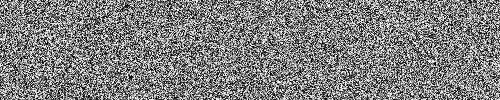
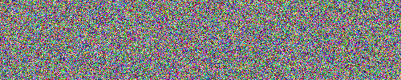
Exo
Créer une image de largeur 256( la largeur n'est pas choisie au hasard) et de hauteur quelconque, en niveaux de gris telle que tous les pixels de la colonne i aient une intensité égale à i.
Vous devriez obtenir ceci:
Exo
Même chose que précédemment mais le dégradé va du blanc vers le noir!
Exo
Créer une image de dimension 600(width) sur 400(height) pixels qui est le drapeau français.
On sauvegardera cette image sous le nom drapeau.png.
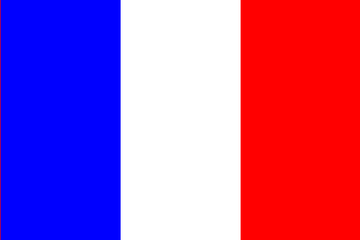
Exo
Créer une image en niveaux de gris de dimension 500 sur 100 pixels où chaque pixel de ligne de rang pair est blanc et les autres noir.
On sauvegardera cette image sous le nom ligneblanche.png .
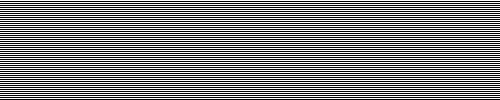
Exo
L'image Firefox.png est une image couleur qui est donc la superposition de trois images: l'une contient les composantes de rouge, l'autre de vert et la dernière de bleu.
Construire ces trois images que vous sauvegarderez sous le nom filtreRougeFirefox.png,....
Exo
Construire l'image obtenue par une symétrie verticale. On sauvegardera l'image sous le nom puppyV.png.
Construire l'image obtenue par une symétrie horizontale.On sauvegardera l'image sous le nom puppyH.png.
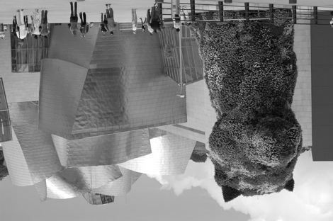
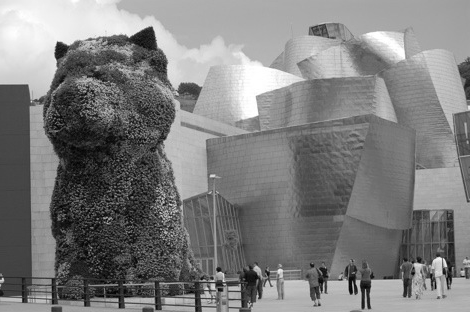
Exo
Effet de seuillage: L'idée est d'effectuer un seuillage sur l'image en construisant une nouvelle image selon le principe suivant: tous les pixels dont l'intensité est inférieure ou égal à 127 sont transformés en pixel d'intensité 0 et ceux d'intensité strictement supérieur à 127 transformés en pixel d'intensité 255.
On sauvegardera l'image sous le nom puppySeuil127.png.
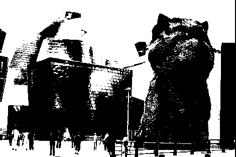
Exo
Même exercice que précédemment mais le choix du seuil \(s\) est fait par l'utilisateur.
On effectuera une f-string pour sauvegarder l'image.
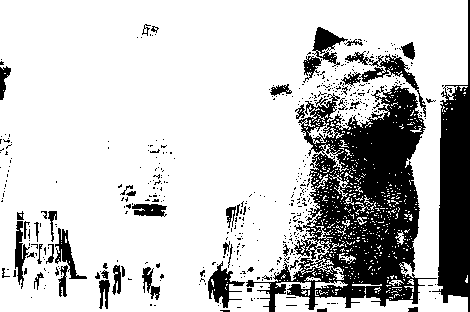
Exo
À l'aide la bibliothèque matplotlibque vous connaissez déjà, construire l'histogramme des intensités de niveaux de gris de l'image puppy.png: en abscisse, on trouve une intensité \(i\) de 0 à 255 et en ordonnée le nombre de pixels d'intensité \(i\) dans l'image.
Le code est donné ci-dessous et doit être complété.
from PIL import Image
import matplotlib.pyplot as plt
import numpy as np
im = Image.open("./Images/puppy.png")
# Construire par compréhension une liste de 256 éléments tous égaux à 0
L = ...............
for l in range(im.size[1]):
for c in range(im.size[0]):
p = im.getpixel((c,l))
# incrementer la position p dans la liste
L[p] ...........
im.close()
#----- CODE POUR HISTOGRAMME ----#
I = [i for i in range(256)]
fig, ax = plt.subplots()
ax.set_xlabel("valeur d'intensité")
ax.set_ylabel("Nombres de pixels")
ax.set_title("Histogramme des intensités")
ax.set_xticks(np.arange(0, 255, 50))
ax.bar(I,L)
plt.show()
#----- FIN CODE POUR HISTOGRAMME ----#
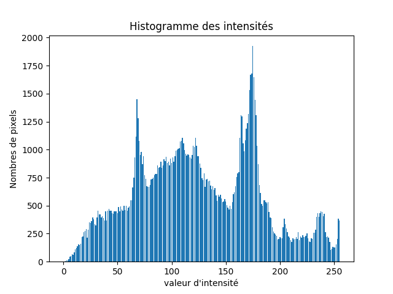